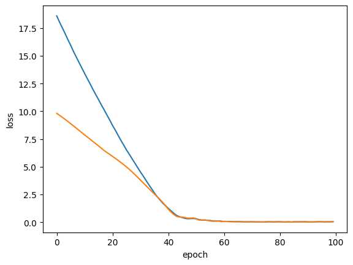
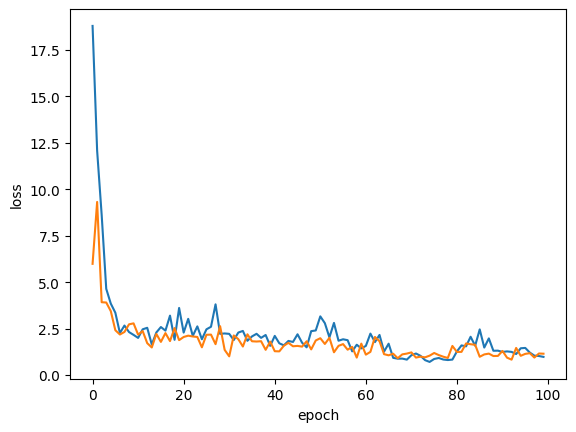

<!DOCTYPE html>


<html >

  <head>
    <meta charset="utf-8" />
    <meta name="viewport" content="width=device-width, initial-scale=1.0" />
    <title>Regression - Tensorflow &#8212; Statsbook</title>
  
  
  
  <script data-cfasync="false">
    document.documentElement.dataset.mode = localStorage.getItem("mode") || "";
    document.documentElement.dataset.theme = localStorage.getItem("theme") || "light";
  </script>
  
  <!-- Loaded before other Sphinx assets -->
  <link href="../../../_static/styles/theme.css?digest=e353d410970836974a52" rel="stylesheet" />
<link href="../../../_static/styles/bootstrap.css?digest=e353d410970836974a52" rel="stylesheet" />
<link href="../../../_static/styles/pydata-sphinx-theme.css?digest=e353d410970836974a52" rel="stylesheet" />

  
  <link href="../../../_static/vendor/fontawesome/6.1.2/css/all.min.css?digest=e353d410970836974a52" rel="stylesheet" />
  <link rel="preload" as="font" type="font/woff2" crossorigin href="../../../_static/vendor/fontawesome/6.1.2/webfonts/fa-solid-900.woff2" />
<link rel="preload" as="font" type="font/woff2" crossorigin href="../../../_static/vendor/fontawesome/6.1.2/webfonts/fa-brands-400.woff2" />
<link rel="preload" as="font" type="font/woff2" crossorigin href="../../../_static/vendor/fontawesome/6.1.2/webfonts/fa-regular-400.woff2" />

    <link rel="stylesheet" type="text/css" href="../../../_static/pygments.css" />
    <link rel="stylesheet" href="../../../_static/styles/sphinx-book-theme.css?digest=14f4ca6b54d191a8c7657f6c759bf11a5fb86285" type="text/css" />
    <link rel="stylesheet" type="text/css" href="../../../_static/togglebutton.css" />
    <link rel="stylesheet" type="text/css" href="../../../_static/copybutton.css" />
    <link rel="stylesheet" type="text/css" href="../../../_static/mystnb.4510f1fc1dee50b3e5859aac5469c37c29e427902b24a333a5f9fcb2f0b3ac41.css" />
    <link rel="stylesheet" type="text/css" href="../../../_static/sphinx-thebe.css" />
    <link rel="stylesheet" type="text/css" href="../../../_static/design-style.4045f2051d55cab465a707391d5b2007.min.css" />
  
  <!-- Pre-loaded scripts that we'll load fully later -->
  <link rel="preload" as="script" href="../../../_static/scripts/bootstrap.js?digest=e353d410970836974a52" />
<link rel="preload" as="script" href="../../../_static/scripts/pydata-sphinx-theme.js?digest=e353d410970836974a52" />

    <script data-url_root="../../../" id="documentation_options" src="../../../_static/documentation_options.js"></script>
    <script src="../../../_static/jquery.js"></script>
    <script src="../../../_static/underscore.js"></script>
    <script src="../../../_static/doctools.js"></script>
    <script src="../../../_static/clipboard.min.js"></script>
    <script src="../../../_static/copybutton.js"></script>
    <script src="../../../_static/scripts/sphinx-book-theme.js?digest=5a5c038af52cf7bc1a1ec88eea08e6366ee68824"></script>
    <script>let toggleHintShow = 'Click to show';</script>
    <script>let toggleHintHide = 'Click to hide';</script>
    <script>let toggleOpenOnPrint = 'true';</script>
    <script src="../../../_static/togglebutton.js"></script>
    <script>var togglebuttonSelector = '.toggle, .admonition.dropdown';</script>
    <script src="../../../_static/design-tabs.js"></script>
    <script>const THEBE_JS_URL = "https://unpkg.com/thebe@0.8.2/lib/index.js"
const thebe_selector = ".thebe,.cell"
const thebe_selector_input = "pre"
const thebe_selector_output = ".output, .cell_output"
</script>
    <script async="async" src="../../../_static/sphinx-thebe.js"></script>
    <script>window.MathJax = {"options": {"processHtmlClass": "tex2jax_process|mathjax_process|math|output_area"}}</script>
    <script defer="defer" src="https://cdn.jsdelivr.net/npm/mathjax@3/es5/tex-mml-chtml.js"></script>
    <script>DOCUMENTATION_OPTIONS.pagename = 'contents/neural_networks/basics/regression_tf';</script>
    <link rel="index" title="Index" href="../../../genindex.html" />
    <link rel="search" title="Search" href="../../../search.html" />
    <link rel="next" title="Shallow Neural Network" href="shallow.html" />
    <link rel="prev" title="Home" href="../home.html" />
  <meta name="viewport" content="width=device-width, initial-scale=1"/>
  <meta name="docsearch:language" content="None"/>
  </head>
  
  
  <body data-bs-spy="scroll" data-bs-target=".bd-toc-nav" data-offset="180" data-bs-root-margin="0px 0px -60%" data-default-mode="">

  
  
  <a class="skip-link" href="#main-content">Skip to main content</a>
  
  <input type="checkbox"
          class="sidebar-toggle"
          name="__primary"
          id="__primary"/>
  <label class="overlay overlay-primary" for="__primary"></label>
  
  <input type="checkbox"
          class="sidebar-toggle"
          name="__secondary"
          id="__secondary"/>
  <label class="overlay overlay-secondary" for="__secondary"></label>
  
  <div class="search-button__wrapper">
    <div class="search-button__overlay"></div>
    <div class="search-button__search-container">
<form class="bd-search d-flex align-items-center"
      action="../../../search.html"
      method="get">
  <i class="fa-solid fa-magnifying-glass"></i>
  <input type="search"
         class="form-control"
         name="q"
         id="search-input"
         placeholder="Search this book..."
         aria-label="Search this book..."
         autocomplete="off"
         autocorrect="off"
         autocapitalize="off"
         spellcheck="false"/>
  <span class="search-button__kbd-shortcut"><kbd class="kbd-shortcut__modifier">Ctrl</kbd>+<kbd>K</kbd></span>
</form></div>
  </div>
  
    <nav class="bd-header navbar navbar-expand-lg bd-navbar">
    </nav>
  
  <div class="bd-container">
    <div class="bd-container__inner bd-page-width">
      
      <div class="bd-sidebar-primary bd-sidebar">
        

  
  <div class="sidebar-header-items sidebar-primary__section">
    
    
    
    
  </div>
  
    <div class="sidebar-primary-items__start sidebar-primary__section">
        <div class="sidebar-primary-item">
  

<a class="navbar-brand logo" href="../../home.html">
  
  
  
  
  
    <p class="title logo__title">Statsbook</p>
  
</a></div>
        <div class="sidebar-primary-item"><nav class="bd-links" id="bd-docs-nav" aria-label="Main">
    <div class="bd-toc-item navbar-nav active">
        
        <ul class="nav bd-sidenav bd-sidenav__home-link">
            <li class="toctree-l1">
                <a class="reference internal" href="../../home.html">
                    statsbook
                </a>
            </li>
        </ul>
        <p aria-level="2" class="caption" role="heading"><span class="caption-text">Foundation</span></p>
<ul class="nav bd-sidenav">
<li class="toctree-l1"><a class="reference internal" href="../../foundation/home.html">Home</a></li>
<li class="toctree-l1 has-children"><a class="reference internal" href="../../foundation/probability/README.html">Probability</a><input class="toctree-checkbox" id="toctree-checkbox-1" name="toctree-checkbox-1" type="checkbox"/><label class="toctree-toggle" for="toctree-checkbox-1"><i class="fa-solid fa-chevron-down"></i></label><ul>
<li class="toctree-l2"><a class="reference internal" href="../../foundation/probability/intro.html">Probability Introduction</a></li>
<li class="toctree-l2"><a class="reference internal" href="../../foundation/probability/discrete_distributions.html">Discrete Distributions</a></li>
<li class="toctree-l2"><a class="reference internal" href="../../foundation/probability/continuous_distributions.html">Continuous Distributions</a></li>
<li class="toctree-l2"><a class="reference internal" href="../../foundation/probability/multivariate_distributions.html">Multivariate Distributions</a></li>
<li class="toctree-l2"><a class="reference internal" href="../../foundation/probability/clt.html">Central Limit Theorem</a></li>
<li class="toctree-l2"><a class="reference internal" href="../../foundation/probability/hypothesis_testing.html">Hypothesis Testing</a></li>
<li class="toctree-l2"><a class="reference internal" href="../../foundation/probability/bias_variance.html">Bias Variance</a></li>
</ul>
</li>
<li class="toctree-l1"><a class="reference internal" href="../../foundation/linear_algebra/review.html">Lin Alg Review</a></li>
<li class="toctree-l1 has-children"><a class="reference internal" href="../../foundation/regression/README.html">Regression</a><input class="toctree-checkbox" id="toctree-checkbox-2" name="toctree-checkbox-2" type="checkbox"/><label class="toctree-toggle" for="toctree-checkbox-2"><i class="fa-solid fa-chevron-down"></i></label><ul>
<li class="toctree-l2 has-children"><a class="reference internal" href="../../foundation/regression/ols/README.html">OLS</a><input class="toctree-checkbox" id="toctree-checkbox-3" name="toctree-checkbox-3" type="checkbox"/><label class="toctree-toggle" for="toctree-checkbox-3"><i class="fa-solid fa-chevron-down"></i></label><ul>
<li class="toctree-l3"><a class="reference internal" href="../../foundation/regression/ols/ols.html">Demo</a></li>
<li class="toctree-l3"><a class="reference internal" href="../../foundation/regression/ols/assumptions.html">Assumptions</a></li>
<li class="toctree-l3"><a class="reference internal" href="../../foundation/regression/ols/diagnostics.html">OLS: Diagnostics</a></li>
<li class="toctree-l3"><a class="reference internal" href="../../foundation/regression/ols/wls.html">WLS</a></li>
</ul>
</li>
<li class="toctree-l2 has-children"><a class="reference internal" href="../../foundation/regression/glm/README.html">Generalized Linear Models</a><input class="toctree-checkbox" id="toctree-checkbox-4" name="toctree-checkbox-4" type="checkbox"/><label class="toctree-toggle" for="toctree-checkbox-4"><i class="fa-solid fa-chevron-down"></i></label><ul>
<li class="toctree-l3 has-children"><a class="reference internal" href="../../foundation/regression/glm/logistic/README.html">Logistic Regression</a><input class="toctree-checkbox" id="toctree-checkbox-5" name="toctree-checkbox-5" type="checkbox"/><label class="toctree-toggle" for="toctree-checkbox-5"><i class="fa-solid fa-chevron-down"></i></label><ul>
<li class="toctree-l4"><a class="reference internal" href="../../foundation/regression/glm/logistic/logistic.html">Demo</a></li>
<li class="toctree-l4"><a class="reference internal" href="../../foundation/regression/glm/logistic/interpretation.html">Intepretation</a></li>
</ul>
</li>
<li class="toctree-l3 has-children"><a class="reference internal" href="../../foundation/regression/glm/poisson/README.html">Poisson</a><input class="toctree-checkbox" id="toctree-checkbox-6" name="toctree-checkbox-6" type="checkbox"/><label class="toctree-toggle" for="toctree-checkbox-6"><i class="fa-solid fa-chevron-down"></i></label><ul>
<li class="toctree-l4"><a class="reference internal" href="../../foundation/regression/glm/poisson/poisson.html">Demo</a></li>
<li class="toctree-l4"><a class="reference internal" href="../../foundation/regression/glm/poisson/interpretation.html">Interpretation</a></li>
</ul>
</li>
<li class="toctree-l3"><a class="reference internal" href="../../foundation/regression/glm/model_comparisons.html">Model Comparisons</a></li>
</ul>
</li>
<li class="toctree-l2"><a class="reference internal" href="../../foundation/regression/interactions.html">Interactions</a></li>
<li class="toctree-l2"><a class="reference internal" href="../../foundation/regression/estimation.html">Estimation</a></li>

<li class="toctree-l2"><a class="reference internal" href="../../foundation/regression/ridge_lasso.html">Regularization</a></li>
</ul>
</li>
<li class="toctree-l1 has-children"><a class="reference internal" href="../../foundation/sampling/README.html">Sampling</a><input class="toctree-checkbox" id="toctree-checkbox-7" name="toctree-checkbox-7" type="checkbox"/><label class="toctree-toggle" for="toctree-checkbox-7"><i class="fa-solid fa-chevron-down"></i></label><ul>
<li class="toctree-l2"><a class="reference internal" href="../../foundation/sampling/bootstrap.html">Bootstrap</a></li>
<li class="toctree-l2"><a class="reference internal" href="../../foundation/sampling/crossvalidation.html">Cross Validation</a></li>
</ul>
</li>
</ul>
<p aria-level="2" class="caption" role="heading"><span class="caption-text">Simulations</span></p>
<ul class="nav bd-sidenav">
<li class="toctree-l1 has-children"><a class="reference internal" href="../../simulations/README.html">Simulations</a><input class="toctree-checkbox" id="toctree-checkbox-8" name="toctree-checkbox-8" type="checkbox"/><label class="toctree-toggle" for="toctree-checkbox-8"><i class="fa-solid fa-chevron-down"></i></label><ul>
<li class="toctree-l2"><a class="reference internal" href="../../simulations/confidence_intervals.html">Confidence Intervals</a></li>
<li class="toctree-l2"><a class="reference internal" href="../../simulations/pvalues.html">P-values</a></li>
</ul>
</li>
</ul>
<p aria-level="2" class="caption" role="heading"><span class="caption-text">Causal Inference</span></p>
<ul class="nav bd-sidenav">
<li class="toctree-l1 has-children"><a class="reference internal" href="../../causal_inference/framework/README.html">Potential Outcomes Framework</a><input class="toctree-checkbox" id="toctree-checkbox-9" name="toctree-checkbox-9" type="checkbox"/><label class="toctree-toggle" for="toctree-checkbox-9"><i class="fa-solid fa-chevron-down"></i></label><ul>
<li class="toctree-l2"><a class="reference internal" href="../../causal_inference/framework/fundamental_problem.html">Fundamental Problem of Causal Inference</a></li>
<li class="toctree-l2"><a class="reference internal" href="../../causal_inference/framework/ignorability.html">Ignorability</a></li>
<li class="toctree-l2"><a class="reference internal" href="../../causal_inference/framework/matching.html">Matching</a></li>
</ul>
</li>
<li class="toctree-l1"><a class="reference internal" href="../../causal_inference/propensity_scores.html">Propensity Scores</a></li>
<li class="toctree-l1"><a class="reference internal" href="../../causal_inference/regression_discontinuity.html">Regression Discontinuity</a></li>
</ul>
<p aria-level="2" class="caption" role="heading"><span class="caption-text">Machine Learning</span></p>
<ul class="nav bd-sidenav">
<li class="toctree-l1"><a class="reference internal" href="../../machine_learning/home.html">Home</a></li>
<li class="toctree-l1 has-children"><a class="reference internal" href="../../machine_learning/supervised/README.html">Supervised</a><input class="toctree-checkbox" id="toctree-checkbox-10" name="toctree-checkbox-10" type="checkbox"/><label class="toctree-toggle" for="toctree-checkbox-10"><i class="fa-solid fa-chevron-down"></i></label><ul>
<li class="toctree-l2"><a class="reference internal" href="../../machine_learning/supervised/discriminant_analysis.html">Discriminant Analysis</a></li>
<li class="toctree-l2 has-children"><a class="reference internal" href="../../machine_learning/supervised/decision_trees/README.html">Decision Trees</a><input class="toctree-checkbox" id="toctree-checkbox-11" name="toctree-checkbox-11" type="checkbox"/><label class="toctree-toggle" for="toctree-checkbox-11"><i class="fa-solid fa-chevron-down"></i></label><ul>
<li class="toctree-l3"><a class="reference internal" href="../../machine_learning/supervised/decision_trees/regression_tree.html">Regression Trees</a></li>
<li class="toctree-l3"><a class="reference internal" href="../../machine_learning/supervised/decision_trees/classification_tree.html">Classification Trees</a></li>
<li class="toctree-l3"><a class="reference internal" href="../../machine_learning/supervised/decision_trees/boosting.html">Boosting</a></li>
<li class="toctree-l3"><a class="reference internal" href="../../machine_learning/supervised/decision_trees/random_forest.html">Random Forest</a></li>
</ul>
</li>
<li class="toctree-l2"><a class="reference internal" href="../../machine_learning/supervised/knn.html">K-Nearest Neighbors</a></li>
<li class="toctree-l2 has-children"><a class="reference internal" href="../../machine_learning/supervised/support_vector_machines/README.html">Support Vector Machines</a><input class="toctree-checkbox" id="toctree-checkbox-12" name="toctree-checkbox-12" type="checkbox"/><label class="toctree-toggle" for="toctree-checkbox-12"><i class="fa-solid fa-chevron-down"></i></label><ul>
<li class="toctree-l3"><a class="reference internal" href="../../machine_learning/supervised/support_vector_machines/theory.html">Theory</a></li>
<li class="toctree-l3"><a class="reference internal" href="../../machine_learning/supervised/support_vector_machines/applied.html">Applied</a></li>
</ul>
</li>
</ul>
</li>
<li class="toctree-l1 has-children"><a class="reference internal" href="../../machine_learning/clustering/README.html">Clustering</a><input class="toctree-checkbox" id="toctree-checkbox-13" name="toctree-checkbox-13" type="checkbox"/><label class="toctree-toggle" for="toctree-checkbox-13"><i class="fa-solid fa-chevron-down"></i></label><ul>
<li class="toctree-l2 has-children"><a class="reference internal" href="../../machine_learning/clustering/hierarchical/README.html">Hierarchical</a><input class="toctree-checkbox" id="toctree-checkbox-14" name="toctree-checkbox-14" type="checkbox"/><label class="toctree-toggle" for="toctree-checkbox-14"><i class="fa-solid fa-chevron-down"></i></label><ul>
<li class="toctree-l3"><a class="reference internal" href="../../machine_learning/clustering/hierarchical/theory.html">Theory</a></li>
<li class="toctree-l3"><a class="reference internal" href="../../machine_learning/clustering/hierarchical/applied.html">Applied</a></li>
</ul>
</li>
<li class="toctree-l2 has-children"><a class="reference internal" href="../../machine_learning/clustering/kmeans/README.html">K-means</a><input class="toctree-checkbox" id="toctree-checkbox-15" name="toctree-checkbox-15" type="checkbox"/><label class="toctree-toggle" for="toctree-checkbox-15"><i class="fa-solid fa-chevron-down"></i></label><ul>
<li class="toctree-l3"><a class="reference internal" href="../../machine_learning/clustering/kmeans/theory.html">Theory</a></li>
<li class="toctree-l3"><a class="reference internal" href="../../machine_learning/clustering/kmeans/applied.html">Applied</a></li>
</ul>
</li>
</ul>
</li>
<li class="toctree-l1"><a class="reference internal" href="../../machine_learning/metrics.html">Metrics</a></li>
<li class="toctree-l1"><a class="reference internal" href="../../machine_learning/pipeline.html">Pipeline Code</a></li>
</ul>
<p aria-level="2" class="caption" role="heading"><span class="caption-text">Neural Networks</span></p>
<ul class="current nav bd-sidenav">
<li class="toctree-l1 current active has-children"><a class="reference internal" href="../home.html">Home</a><input checked="" class="toctree-checkbox" id="toctree-checkbox-16" name="toctree-checkbox-16" type="checkbox"/><label class="toctree-toggle" for="toctree-checkbox-16"><i class="fa-solid fa-chevron-down"></i></label><ul class="current">
<li class="toctree-l2 current active"><a class="current reference internal" href="#">Regression - Tensorflow</a></li>
<li class="toctree-l2"><a class="reference internal" href="shallow.html">Shallow Neural Network</a></li>
<li class="toctree-l2"><a class="reference internal" href="activation.html">Activation Functions</a></li>
</ul>
</li>
</ul>

    </div>
</nav></div>
    </div>
  
  
  <div class="sidebar-primary-items__end sidebar-primary__section">
  </div>
  
  <div id="rtd-footer-container"></div>


      </div>
      
      <main id="main-content" class="bd-main">
        
        

<div class="sbt-scroll-pixel-helper"></div>

          <div class="bd-content">
            <div class="bd-article-container">
              
              <div class="bd-header-article">
<div class="header-article-items header-article__inner">
  
    <div class="header-article-items__start">
      
        <div class="header-article-item"><label class="sidebar-toggle primary-toggle btn btn-sm" for="__primary" title="Toggle primary sidebar" data-bs-placement="bottom" data-bs-toggle="tooltip">
  <span class="fa-solid fa-bars"></span>
</label></div>
      
    </div>
  
  
    <div class="header-article-items__end">
      
        <div class="header-article-item">

<div class="article-header-buttons">


<div class="dropdown dropdown-source-buttons">
  <button class="btn dropdown-toggle" type="button" data-bs-toggle="dropdown" aria-expanded="false" aria-label="Source repositories">
    <i class="fab fa-github"></i>
  </button>
  <ul class="dropdown-menu">
      
      
      
      <li><a href="github.com/chansooligans/statsbook" target="_blank"
   class="btn btn-sm btn-source-repository-button dropdown-item"
   title="Source repository"
   data-bs-placement="left" data-bs-toggle="tooltip"
>
  

<span class="btn__icon-container">
  <i class="fab fa-github"></i>
  </span>
<span class="btn__text-container">Repository</span>
</a>
</li>
      
      
      
      
      <li><a href="github.com/chansooligans/statsbook/issues/new?title=Issue%20on%20page%20%2Fcontents/neural_networks/basics/regression_tf.html&body=Your%20issue%20content%20here." target="_blank"
   class="btn btn-sm btn-source-issues-button dropdown-item"
   title="Open an issue"
   data-bs-placement="left" data-bs-toggle="tooltip"
>
  

<span class="btn__icon-container">
  <i class="fas fa-lightbulb"></i>
  </span>
<span class="btn__text-container">Open issue</span>
</a>
</li>
      
  </ul>
</div>


<div class="dropdown dropdown-download-buttons">
  <button class="btn dropdown-toggle" type="button" data-bs-toggle="dropdown" aria-expanded="false" aria-label="Download this page">
    <i class="fas fa-download"></i>
  </button>
  <ul class="dropdown-menu">
      
      
      
      <li><a href="../../../_sources/contents/neural_networks/basics/regression_tf.py" target="_blank"
   class="btn btn-sm btn-download-source-button dropdown-item"
   title="Download source file"
   data-bs-placement="left" data-bs-toggle="tooltip"
>
  

<span class="btn__icon-container">
  <i class="fas fa-file"></i>
  </span>
<span class="btn__text-container">.py</span>
</a>
</li>
      
      
      
      
      <li>
<button onclick="window.print()"
  class="btn btn-sm btn-download-pdf-button dropdown-item"
  title="Print to PDF"
  data-bs-placement="left" data-bs-toggle="tooltip"
>
  

<span class="btn__icon-container">
  <i class="fas fa-file-pdf"></i>
  </span>
<span class="btn__text-container">.pdf</span>
</button>
</li>
      
  </ul>
</div>


<button onclick="toggleFullScreen()"
  class="btn btn-sm btn-fullscreen-button"
  title="Fullscreen mode"
  data-bs-placement="bottom" data-bs-toggle="tooltip"
>
  

<span class="btn__icon-container">
  <i class="fas fa-expand"></i>
  </span>

</button>


<script>
document.write(`
  <button class="theme-switch-button btn btn-sm btn-outline-primary navbar-btn rounded-circle" title="light/dark" aria-label="light/dark" data-bs-placement="bottom" data-bs-toggle="tooltip">
    <span class="theme-switch" data-mode="light"><i class="fa-solid fa-sun"></i></span>
    <span class="theme-switch" data-mode="dark"><i class="fa-solid fa-moon"></i></span>
    <span class="theme-switch" data-mode="auto"><i class="fa-solid fa-circle-half-stroke"></i></span>
  </button>
`);
</script>

<script>
document.write(`
  <button class="btn btn-sm navbar-btn search-button search-button__button" title="Search" aria-label="Search" data-bs-placement="bottom" data-bs-toggle="tooltip">
    <i class="fa-solid fa-magnifying-glass"></i>
  </button>
`);
</script>
<label class="sidebar-toggle secondary-toggle btn btn-sm" for="__secondary"title="Toggle secondary sidebar" data-bs-placement="bottom" data-bs-toggle="tooltip">
    <span class="fa-solid fa-list"></span>
</label>
</div></div>
      
    </div>
  
</div>
</div>
              
              

<div id="jb-print-docs-body" class="onlyprint">
    <h1>Regression - Tensorflow</h1>
    <!-- Table of contents -->
    <div id="print-main-content">
        <div id="jb-print-toc">
            
            <div>
                <h2> Contents </h2>
            </div>
            <nav aria-label="Page">
                <ul class="visible nav section-nav flex-column">
<li class="toc-h2 nav-item toc-entry"><a class="reference internal nav-link" href="#create-data">Create Data</a></li>
<li class="toc-h2 nav-item toc-entry"><a class="reference internal nav-link" href="#split-train-test">Split Train/Test</a></li>
<li class="toc-h2 nav-item toc-entry"><a class="reference internal nav-link" href="#single-layer">Single Layer</a></li>
<li class="toc-h2 nav-item toc-entry"><a class="reference internal nav-link" href="#deep-neural-network">Deep Neural Network</a></li>
</ul>
            </nav>
        </div>
    </div>
</div>

              
                
<div id="searchbox"></div>
                <article class="bd-article" role="main">
                  
  <div class="tex2jax_ignore mathjax_ignore section" id="regression-tensorflow">
<h1>Regression - Tensorflow<a class="headerlink" href="#regression-tensorflow" title="Permalink to this headline">#</a></h1>
<div class="cell docutils container">
<div class="cell_input docutils container">
<div class="highlight-ipython3 notranslate"><div class="highlight"><pre><span></span><span class="kn">import</span> <span class="nn">tensorflow</span> <span class="k">as</span> <span class="nn">tf</span>
<span class="kn">from</span> <span class="nn">tensorflow</span> <span class="kn">import</span> <span class="n">keras</span>
<span class="kn">from</span> <span class="nn">tensorflow.keras</span> <span class="kn">import</span> <span class="n">layers</span>
<span class="nb">print</span><span class="p">(</span><span class="n">tf</span><span class="o">.</span><span class="n">__version__</span><span class="p">)</span>

<span class="kn">from</span> <span class="nn">sklearn.model_selection</span> <span class="kn">import</span> <span class="n">train_test_split</span>

<span class="kn">import</span> <span class="nn">matplotlib.pyplot</span> <span class="k">as</span> <span class="nn">plt</span>
<span class="kn">import</span> <span class="nn">numpy</span> <span class="k">as</span> <span class="nn">np</span>
<span class="n">np</span><span class="o">.</span><span class="n">set_printoptions</span><span class="p">(</span><span class="n">precision</span><span class="o">=</span><span class="mi">3</span><span class="p">,</span> <span class="n">suppress</span><span class="o">=</span><span class="kc">True</span><span class="p">)</span>
<span class="kn">import</span> <span class="nn">pandas</span> <span class="k">as</span> <span class="nn">pd</span>
<span class="kn">import</span> <span class="nn">seaborn</span> <span class="k">as</span> <span class="nn">sns</span>
</pre></div>
</div>
</div>
<div class="cell_output docutils container">
<div class="output stderr highlight-myst-ansi notranslate"><div class="highlight"><pre><span></span>2023-06-01 12:47:04.882786: I tensorflow/core/platform/cpu_feature_guard.cc:193] This TensorFlow binary is optimized with oneAPI Deep Neural Network Library (oneDNN) to use the following CPU instructions in performance-critical operations:  AVX2 AVX_VNNI FMA
To enable them in other operations, rebuild TensorFlow with the appropriate compiler flags.
2023-06-01 12:47:04.946947: I tensorflow/core/util/port.cc:104] oneDNN custom operations are on. You may see slightly different numerical results due to floating-point round-off errors from different computation orders. To turn them off, set the environment variable `TF_ENABLE_ONEDNN_OPTS=0`.
</pre></div>
</div>
<div class="output stream highlight-myst-ansi notranslate"><div class="highlight"><pre><span></span>2.11.1
</pre></div>
</div>
</div>
</div>
<div class="section" id="create-data">
<h2>Create Data<a class="headerlink" href="#create-data" title="Permalink to this headline">#</a></h2>
<div class="cell docutils container">
<div class="cell_input docutils container">
<div class="highlight-ipython3 notranslate"><div class="highlight"><pre><span></span><span class="n">np</span><span class="o">.</span><span class="n">random</span><span class="o">.</span><span class="n">seed</span><span class="p">(</span><span class="mi">0</span><span class="p">)</span>
<span class="n">cols</span> <span class="o">=</span> <span class="s2">&quot;abcdefghijk&quot;</span>
<span class="n">df</span> <span class="o">=</span> <span class="n">pd</span><span class="o">.</span><span class="n">DataFrame</span><span class="p">({</span>
    <span class="n">col</span><span class="p">:</span><span class="n">np</span><span class="o">.</span><span class="n">random</span><span class="o">.</span><span class="n">normal</span><span class="p">(</span><span class="mi">0</span><span class="p">,</span><span class="mi">1</span><span class="p">,</span><span class="mi">100</span><span class="p">)</span>
    <span class="k">for</span> <span class="n">col</span> <span class="ow">in</span> <span class="n">cols</span>
<span class="p">})</span>

<span class="n">coefs</span> <span class="o">=</span> <span class="n">np</span><span class="o">.</span><span class="n">round</span><span class="p">(</span><span class="n">np</span><span class="o">.</span><span class="n">random</span><span class="o">.</span><span class="n">uniform</span><span class="p">(</span><span class="mi">2</span><span class="p">,</span><span class="mi">10</span><span class="p">,</span><span class="nb">len</span><span class="p">(</span><span class="n">cols</span><span class="p">)),</span><span class="mi">0</span><span class="p">)</span>
<span class="nb">print</span><span class="p">(</span><span class="n">coefs</span><span class="p">)</span>
<span class="n">df</span><span class="p">[</span><span class="s2">&quot;y&quot;</span><span class="p">]</span> <span class="o">=</span> <span class="n">np</span><span class="o">.</span><span class="n">array</span><span class="p">(</span><span class="n">df</span><span class="p">)</span> <span class="o">@</span> <span class="n">coefs</span>
</pre></div>
</div>
</div>
<div class="cell_output docutils container">
<div class="output stream highlight-myst-ansi notranslate"><div class="highlight"><pre><span></span>[6. 3. 5. 8. 4. 3. 9. 8. 7. 8. 9.]
</pre></div>
</div>
</div>
</div>
<div class="cell docutils container">
<div class="cell_input docutils container">
<div class="highlight-ipython3 notranslate"><div class="highlight"><pre><span></span><span class="n">df</span><span class="o">.</span><span class="n">head</span><span class="p">()</span>
</pre></div>
</div>
</div>
<div class="cell_output docutils container">
<div class="output text_html"><div>
<style scoped>
    .dataframe tbody tr th:only-of-type {
        vertical-align: middle;
    }

    .dataframe tbody tr th {
        vertical-align: top;
    }

    .dataframe thead th {
        text-align: right;
    }
</style>
<table border="1" class="dataframe">
  <thead>
    <tr style="text-align: right;">
      <th></th>
      <th>a</th>
      <th>b</th>
      <th>c</th>
      <th>d</th>
      <th>e</th>
      <th>f</th>
      <th>g</th>
      <th>h</th>
      <th>i</th>
      <th>j</th>
      <th>k</th>
      <th>y</th>
    </tr>
  </thead>
  <tbody>
    <tr>
      <th>0</th>
      <td>1.764052</td>
      <td>1.883151</td>
      <td>-0.369182</td>
      <td>-1.306527</td>
      <td>-0.598654</td>
      <td>0.382732</td>
      <td>-1.550429</td>
      <td>-1.444940</td>
      <td>1.411172</td>
      <td>-1.461733</td>
      <td>0.555963</td>
      <td>-19.636155</td>
    </tr>
    <tr>
      <th>1</th>
      <td>0.400157</td>
      <td>-1.347759</td>
      <td>-0.239379</td>
      <td>1.658131</td>
      <td>-1.115897</td>
      <td>-0.034242</td>
      <td>0.417319</td>
      <td>-1.210543</td>
      <td>0.785804</td>
      <td>-0.683440</td>
      <td>0.892474</td>
      <td>7.996400</td>
    </tr>
    <tr>
      <th>2</th>
      <td>0.978738</td>
      <td>-1.270485</td>
      <td>1.099660</td>
      <td>-0.118164</td>
      <td>0.766663</td>
      <td>1.096347</td>
      <td>-0.944368</td>
      <td>-0.788669</td>
      <td>-0.057470</td>
      <td>0.367545</td>
      <td>-0.422315</td>
      <td>-3.101780</td>
    </tr>
    <tr>
      <th>3</th>
      <td>2.240893</td>
      <td>0.969397</td>
      <td>0.655264</td>
      <td>-0.680178</td>
      <td>0.356293</td>
      <td>-0.234216</td>
      <td>0.238103</td>
      <td>1.094638</td>
      <td>-0.391217</td>
      <td>0.190312</td>
      <td>0.104714</td>
      <td>25.537401</td>
    </tr>
    <tr>
      <th>4</th>
      <td>1.867558</td>
      <td>-1.173123</td>
      <td>0.640132</td>
      <td>0.666383</td>
      <td>-1.768538</td>
      <td>-0.347451</td>
      <td>-1.405963</td>
      <td>0.234822</td>
      <td>0.940918</td>
      <td>-0.851729</td>
      <td>0.228053</td>
      <td>-0.848830</td>
    </tr>
  </tbody>
</table>
</div></div></div>
</div>
</div>
<div class="section" id="split-train-test">
<h2>Split Train/Test<a class="headerlink" href="#split-train-test" title="Permalink to this headline">#</a></h2>
<div class="cell docutils container">
<div class="cell_input docutils container">
<div class="highlight-ipython3 notranslate"><div class="highlight"><pre><span></span><span class="n">train</span><span class="p">,</span> <span class="n">test</span> <span class="o">=</span> <span class="n">train_test_split</span><span class="p">(</span><span class="n">df</span><span class="p">,</span> <span class="n">test_size</span><span class="o">=</span><span class="mf">0.2</span><span class="p">,</span> <span class="n">random_state</span><span class="o">=</span><span class="mi">0</span><span class="p">)</span>
<span class="n">train_labels</span> <span class="o">=</span> <span class="n">train</span><span class="o">.</span><span class="n">pop</span><span class="p">(</span><span class="s2">&quot;y&quot;</span><span class="p">)</span>
<span class="n">test_labels</span> <span class="o">=</span> <span class="n">test</span><span class="o">.</span><span class="n">pop</span><span class="p">(</span><span class="s2">&quot;y&quot;</span><span class="p">)</span>
</pre></div>
</div>
</div>
</div>
</div>
<div class="section" id="single-layer">
<h2>Single Layer<a class="headerlink" href="#single-layer" title="Permalink to this headline">#</a></h2>
<p>“Dense” layer implements <code class="docutils literal notranslate"><span class="pre">activation(dot(input,</span> <span class="pre">kernel)</span> <span class="pre">+</span> <span class="pre">bias)</span></code></p>
<ul class="simple">
<li><p>activation is the element-wise activation function</p></li>
<li><p>kernel is the weights matrix created by the layer</p></li>
<li><p>bias is applicable if <code class="docutils literal notranslate"><span class="pre">use_bias</span></code> is <code class="docutils literal notranslate"><span class="pre">True</span></code></p></li>
</ul>
<p>The model is:</p>
<div class="math notranslate nohighlight">
\[y = WX + b\]</div>
<ul class="simple">
<li><p>y is [1,80]</p></li>
<li><p>W is [1, 11]</p></li>
<li><p>X is [11, 80]</p></li>
<li><p>b is [1, 1], duplicated to [1,80] with broadcasting</p></li>
</ul>
<div class="cell docutils container">
<div class="cell_input docutils container">
<div class="highlight-ipython3 notranslate"><div class="highlight"><pre><span></span><span class="c1"># build the model</span>
<span class="c1"># normalization optional for this simple model</span>

<span class="c1"># normalizer = layers.Normalization(axis=-1)</span>
<span class="n">linear_model</span> <span class="o">=</span> <span class="n">tf</span><span class="o">.</span><span class="n">keras</span><span class="o">.</span><span class="n">Sequential</span><span class="p">([</span>
    <span class="c1"># normalizer,</span>
    <span class="n">layers</span><span class="o">.</span><span class="n">Dense</span><span class="p">(</span><span class="n">units</span><span class="o">=</span><span class="mi">1</span><span class="p">,</span> <span class="n">use_bias</span><span class="o">=</span><span class="kc">True</span><span class="p">)</span>
<span class="p">])</span>

<span class="c1"># print summary of model (need to build first to print summary)</span>
<span class="n">linear_model</span><span class="o">.</span><span class="n">predict</span><span class="p">(</span><span class="n">train</span><span class="p">)</span>
<span class="n">linear_model</span><span class="o">.</span><span class="n">summary</span><span class="p">()</span>
</pre></div>
</div>
</div>
<div class="cell_output docutils container">
<div class="output stream highlight-myst-ansi notranslate"><div class="highlight"><pre><span></span>1/3 [=========&gt;....................] - ETA: 0s
</pre></div>
</div>
<div class="output stream highlight-myst-ansi notranslate"><div class="highlight"><pre><span></span>
3/3 [==============================] - 0s 928us/step
</pre></div>
</div>
<div class="output stream highlight-myst-ansi notranslate"><div class="highlight"><pre><span></span>Model: &quot;sequential&quot;
</pre></div>
</div>
<div class="output stream highlight-myst-ansi notranslate"><div class="highlight"><pre><span></span>_________________________________________________________________
</pre></div>
</div>
<div class="output stream highlight-myst-ansi notranslate"><div class="highlight"><pre><span></span> Layer (type)                Output Shape              Param #   
</pre></div>
</div>
<div class="output stream highlight-myst-ansi notranslate"><div class="highlight"><pre><span></span>=================================================================
</pre></div>
</div>
<div class="output stream highlight-myst-ansi notranslate"><div class="highlight"><pre><span></span> dense (Dense)               (None, 1)                 12        
</pre></div>
</div>
<div class="output stream highlight-myst-ansi notranslate"><div class="highlight"><pre><span></span>                                                                 
</pre></div>
</div>
<div class="output stream highlight-myst-ansi notranslate"><div class="highlight"><pre><span></span>=================================================================
</pre></div>
</div>
<div class="output stream highlight-myst-ansi notranslate"><div class="highlight"><pre><span></span>Total params: 12
</pre></div>
</div>
<div class="output stream highlight-myst-ansi notranslate"><div class="highlight"><pre><span></span>Trainable params: 12
</pre></div>
</div>
<div class="output stream highlight-myst-ansi notranslate"><div class="highlight"><pre><span></span>Non-trainable params: 0
</pre></div>
</div>
<div class="output stream highlight-myst-ansi notranslate"><div class="highlight"><pre><span></span>_________________________________________________________________
</pre></div>
</div>
<div class="output stderr highlight-myst-ansi notranslate"><div class="highlight"><pre><span></span>2023-06-01 12:47:06.016287: I tensorflow/core/platform/cpu_feature_guard.cc:193] This TensorFlow binary is optimized with oneAPI Deep Neural Network Library (oneDNN) to use the following CPU instructions in performance-critical operations:  AVX2 AVX_VNNI FMA
To enable them in other operations, rebuild TensorFlow with the appropriate compiler flags.
</pre></div>
</div>
</div>
</div>
<div class="cell docutils container">
<div class="cell_input docutils container">
<div class="highlight-ipython3 notranslate"><div class="highlight"><pre><span></span><span class="c1"># configure training procedure</span>
<span class="n">linear_model</span><span class="o">.</span><span class="n">compile</span><span class="p">(</span>
    <span class="n">optimizer</span><span class="o">=</span><span class="n">tf</span><span class="o">.</span><span class="n">optimizers</span><span class="o">.</span><span class="n">Adam</span><span class="p">(</span><span class="n">learning_rate</span><span class="o">=</span><span class="mf">0.1</span><span class="p">),</span>
    <span class="n">loss</span><span class="o">=</span><span class="s1">&#39;mean_absolute_error&#39;</span>
<span class="p">)</span>
</pre></div>
</div>
</div>
</div>
<div class="cell docutils container">
<div class="cell_input docutils container">
<div class="highlight-ipython3 notranslate"><div class="highlight"><pre><span></span><span class="o">%%time</span>
<span class="c1"># train model</span>
<span class="n">epochs</span> <span class="o">=</span> <span class="mi">100</span>
<span class="n">history</span> <span class="o">=</span> <span class="n">linear_model</span><span class="o">.</span><span class="n">fit</span><span class="p">(</span>
    <span class="n">train</span><span class="p">,</span>
    <span class="n">train_labels</span><span class="p">,</span>
    <span class="n">epochs</span><span class="o">=</span><span class="n">epochs</span><span class="p">,</span>
    <span class="c1"># Suppress logging.</span>
    <span class="n">verbose</span><span class="o">=</span><span class="mi">0</span><span class="p">,</span>
    <span class="c1"># Calculate validation results on 20% of the training data.</span>
    <span class="n">validation_split</span> <span class="o">=</span> <span class="mf">0.2</span>
<span class="p">)</span>
</pre></div>
</div>
</div>
<div class="cell_output docutils container">
<div class="output stream highlight-myst-ansi notranslate"><div class="highlight"><pre><span></span>CPU times: user 1.33 s, sys: 125 ms, total: 1.45 s
Wall time: 1.33 s
</pre></div>
</div>
</div>
</div>
<div class="cell docutils container">
<div class="cell_input docutils container">
<div class="highlight-ipython3 notranslate"><div class="highlight"><pre><span></span><span class="n">dfhist</span> <span class="o">=</span> <span class="n">pd</span><span class="o">.</span><span class="n">DataFrame</span><span class="p">(</span><span class="n">history</span><span class="o">.</span><span class="n">history</span><span class="p">)</span>
<span class="n">dfhist</span><span class="p">[</span><span class="s2">&quot;epoch&quot;</span><span class="p">]</span> <span class="o">=</span> <span class="n">history</span><span class="o">.</span><span class="n">epoch</span>
<span class="n">sns</span><span class="o">.</span><span class="n">lineplot</span><span class="p">(</span><span class="n">dfhist</span><span class="p">[</span><span class="s2">&quot;epoch&quot;</span><span class="p">],</span><span class="n">dfhist</span><span class="p">[</span><span class="s2">&quot;loss&quot;</span><span class="p">])</span>
<span class="n">sns</span><span class="o">.</span><span class="n">lineplot</span><span class="p">(</span><span class="n">dfhist</span><span class="p">[</span><span class="s2">&quot;epoch&quot;</span><span class="p">],</span><span class="n">dfhist</span><span class="p">[</span><span class="s2">&quot;val_loss&quot;</span><span class="p">])</span>
</pre></div>
</div>
</div>
<div class="cell_output docutils container">
<div class="output stderr highlight-myst-ansi notranslate"><div class="highlight"><pre><span></span>/home/chansoo/projects/statsbook/.venv/lib/python3.8/site-packages/seaborn/_decorators.py:36: FutureWarning: Pass the following variables as keyword args: x, y. From version 0.12, the only valid positional argument will be `data`, and passing other arguments without an explicit keyword will result in an error or misinterpretation.
  warnings.warn(
/home/chansoo/projects/statsbook/.venv/lib/python3.8/site-packages/seaborn/_decorators.py:36: FutureWarning: Pass the following variables as keyword args: x, y. From version 0.12, the only valid positional argument will be `data`, and passing other arguments without an explicit keyword will result in an error or misinterpretation.
  warnings.warn(
</pre></div>
</div>
<div class="output text_plain highlight-myst-ansi notranslate"><div class="highlight"><pre><span></span>&lt;Axes: xlabel=&#39;epoch&#39;, ylabel=&#39;loss&#39;&gt;
</pre></div>
</div>

</div>
</div>
<div class="cell docutils container">
<div class="cell_input docutils container">
<div class="highlight-ipython3 notranslate"><div class="highlight"><pre><span></span><span class="c1"># predict using</span>
<span class="c1"># linear_model.predict(train)</span>
</pre></div>
</div>
</div>
</div>
<div class="cell docutils container">
<div class="cell_input docutils container">
<div class="highlight-ipython3 notranslate"><div class="highlight"><pre><span></span><span class="c1"># compare weights of dense layer vs actual coefficients</span>
<span class="c1"># note that if normalizing, dense layer is in linear_model.layers[1]</span>
<span class="nb">print</span><span class="p">(</span><span class="n">linear_model</span><span class="o">.</span><span class="n">layers</span><span class="p">[</span><span class="mi">0</span><span class="p">]</span><span class="o">.</span><span class="n">kernel</span><span class="p">)</span>
<span class="nb">print</span><span class="p">(</span><span class="n">coefs</span><span class="p">)</span>
</pre></div>
</div>
</div>
<div class="cell_output docutils container">
<div class="output stream highlight-myst-ansi notranslate"><div class="highlight"><pre><span></span>&lt;tf.Variable &#39;dense/kernel:0&#39; shape=(11, 1) dtype=float32, numpy=
array([[5.986],
       [3.005],
       [5.009],
       [7.974],
       [4.027],
       [3.012],
       [8.996],
       [8.019],
       [6.976],
       [7.999],
       [9.012]], dtype=float32)&gt;
[6. 3. 5. 8. 4. 3. 9. 8. 7. 8. 9.]
</pre></div>
</div>
</div>
</div>
</div>
<div class="section" id="deep-neural-network">
<h2>Deep Neural Network<a class="headerlink" href="#deep-neural-network" title="Permalink to this headline">#</a></h2>
<p>Simply add more layers when building model.</p>
<p>Note that weights won’t reflect coefficient values anymore.</p>
<div class="cell docutils container">
<div class="cell_input docutils container">
<div class="highlight-ipython3 notranslate"><div class="highlight"><pre><span></span><span class="o">%%time</span>

<span class="c1"># normalizer = layers.Normalization(axis=-1)</span>
<span class="n">linear_model</span> <span class="o">=</span> <span class="n">tf</span><span class="o">.</span><span class="n">keras</span><span class="o">.</span><span class="n">Sequential</span><span class="p">([</span>
      <span class="n">layers</span><span class="o">.</span><span class="n">Dense</span><span class="p">(</span><span class="mi">64</span><span class="p">,</span> <span class="n">activation</span><span class="o">=</span><span class="s1">&#39;relu&#39;</span><span class="p">),</span>
      <span class="n">layers</span><span class="o">.</span><span class="n">Dense</span><span class="p">(</span><span class="mi">64</span><span class="p">,</span> <span class="n">activation</span><span class="o">=</span><span class="s1">&#39;relu&#39;</span><span class="p">),</span>
      <span class="n">layers</span><span class="o">.</span><span class="n">Dense</span><span class="p">(</span><span class="n">units</span><span class="o">=</span><span class="mi">1</span><span class="p">,</span> <span class="n">use_bias</span><span class="o">=</span><span class="kc">True</span><span class="p">)</span>
<span class="p">])</span>

<span class="n">linear_model</span><span class="o">.</span><span class="n">compile</span><span class="p">(</span>
    <span class="n">optimizer</span><span class="o">=</span><span class="n">tf</span><span class="o">.</span><span class="n">optimizers</span><span class="o">.</span><span class="n">Adam</span><span class="p">(</span><span class="n">learning_rate</span><span class="o">=</span><span class="mf">0.1</span><span class="p">),</span>
    <span class="n">loss</span><span class="o">=</span><span class="s1">&#39;mean_absolute_error&#39;</span>
<span class="p">)</span>

<span class="n">epochs</span> <span class="o">=</span> <span class="mi">100</span>
<span class="n">history</span> <span class="o">=</span> <span class="n">linear_model</span><span class="o">.</span><span class="n">fit</span><span class="p">(</span>
    <span class="n">train</span><span class="p">,</span>
    <span class="n">train_labels</span><span class="p">,</span>
    <span class="n">epochs</span><span class="o">=</span><span class="n">epochs</span><span class="p">,</span>
    <span class="c1"># Suppress logging.</span>
    <span class="n">verbose</span><span class="o">=</span><span class="mi">0</span><span class="p">,</span>
    <span class="c1"># Calculate validation results on 20% of the training data.</span>
    <span class="n">validation_split</span> <span class="o">=</span> <span class="mf">0.2</span>
<span class="p">)</span>
</pre></div>
</div>
</div>
<div class="cell_output docutils container">
<div class="output stream highlight-myst-ansi notranslate"><div class="highlight"><pre><span></span>CPU times: user 1.37 s, sys: 272 ms, total: 1.64 s
Wall time: 1.45 s
</pre></div>
</div>
</div>
</div>
<div class="cell docutils container">
<div class="cell_input docutils container">
<div class="highlight-ipython3 notranslate"><div class="highlight"><pre><span></span><span class="n">dfhist</span> <span class="o">=</span> <span class="n">pd</span><span class="o">.</span><span class="n">DataFrame</span><span class="p">(</span><span class="n">history</span><span class="o">.</span><span class="n">history</span><span class="p">)</span>
<span class="n">dfhist</span><span class="p">[</span><span class="s2">&quot;epoch&quot;</span><span class="p">]</span> <span class="o">=</span> <span class="n">history</span><span class="o">.</span><span class="n">epoch</span>
<span class="n">sns</span><span class="o">.</span><span class="n">lineplot</span><span class="p">(</span><span class="n">dfhist</span><span class="p">[</span><span class="s2">&quot;epoch&quot;</span><span class="p">],</span><span class="n">dfhist</span><span class="p">[</span><span class="s2">&quot;loss&quot;</span><span class="p">])</span>
<span class="n">sns</span><span class="o">.</span><span class="n">lineplot</span><span class="p">(</span><span class="n">dfhist</span><span class="p">[</span><span class="s2">&quot;epoch&quot;</span><span class="p">],</span><span class="n">dfhist</span><span class="p">[</span><span class="s2">&quot;val_loss&quot;</span><span class="p">])</span>
</pre></div>
</div>
</div>
<div class="cell_output docutils container">
<div class="output stderr highlight-myst-ansi notranslate"><div class="highlight"><pre><span></span>/home/chansoo/projects/statsbook/.venv/lib/python3.8/site-packages/seaborn/_decorators.py:36: FutureWarning: Pass the following variables as keyword args: x, y. From version 0.12, the only valid positional argument will be `data`, and passing other arguments without an explicit keyword will result in an error or misinterpretation.
  warnings.warn(
/home/chansoo/projects/statsbook/.venv/lib/python3.8/site-packages/seaborn/_decorators.py:36: FutureWarning: Pass the following variables as keyword args: x, y. From version 0.12, the only valid positional argument will be `data`, and passing other arguments without an explicit keyword will result in an error or misinterpretation.
  warnings.warn(
</pre></div>
</div>
<div class="output text_plain highlight-myst-ansi notranslate"><div class="highlight"><pre><span></span>&lt;Axes: xlabel=&#39;epoch&#39;, ylabel=&#39;loss&#39;&gt;
</pre></div>
</div>

</div>
</div>
</div>
</div>

    <script type="text/x-thebe-config">
    {
        requestKernel: true,
        binderOptions: {
            repo: "binder-examples/jupyter-stacks-datascience",
            ref: "master",
        },
        codeMirrorConfig: {
            theme: "abcdef",
            mode: "python"
        },
        kernelOptions: {
            name: "python3",
            path: "./contents/neural_networks/basics"
        },
        predefinedOutput: true
    }
    </script>
    <script>kernelName = 'python3'</script>

                </article>
              

              
              
                <footer class="bd-footer-article">
                  
<div class="footer-article-items footer-article__inner">
  
    <div class="footer-article-item"><!-- Previous / next buttons -->
<div class="prev-next-area">
    <a class="left-prev"
       href="../home.html"
       title="previous page">
      <i class="fa-solid fa-angle-left"></i>
      <div class="prev-next-info">
        <p class="prev-next-subtitle">previous</p>
        <p class="prev-next-title">Home</p>
      </div>
    </a>
    <a class="right-next"
       href="shallow.html"
       title="next page">
      <div class="prev-next-info">
        <p class="prev-next-subtitle">next</p>
        <p class="prev-next-title">Shallow Neural Network</p>
      </div>
      <i class="fa-solid fa-angle-right"></i>
    </a>
</div></div>
  
</div>

                </footer>
              
            </div>
            
            
              
                <div class="bd-sidebar-secondary bd-toc"><div class="sidebar-secondary-items sidebar-secondary__inner">

  <div class="sidebar-secondary-item">
  <div class="page-toc tocsection onthispage">
    <i class="fa-solid fa-list"></i> Contents
  </div>
  <nav class="bd-toc-nav page-toc">
    <ul class="visible nav section-nav flex-column">
<li class="toc-h2 nav-item toc-entry"><a class="reference internal nav-link" href="#create-data">Create Data</a></li>
<li class="toc-h2 nav-item toc-entry"><a class="reference internal nav-link" href="#split-train-test">Split Train/Test</a></li>
<li class="toc-h2 nav-item toc-entry"><a class="reference internal nav-link" href="#single-layer">Single Layer</a></li>
<li class="toc-h2 nav-item toc-entry"><a class="reference internal nav-link" href="#deep-neural-network">Deep Neural Network</a></li>
</ul>
  </nav></div>

</div></div>
              
            
          </div>
          <footer class="bd-footer-content">
            
<div class="bd-footer-content__inner container">
  
  <div class="footer-item">
    
<p class="component-author">
By Chansoo Song
</p>

  </div>
  
  <div class="footer-item">
    
  <p class="copyright">
    
      © Copyright 2022.
      <br/>
    
  </p>

  </div>
  
  <div class="footer-item">
    
  </div>
  
  <div class="footer-item">
    
  </div>
  
</div>
          </footer>
        

      </main>
    </div>
  </div>
  
  <!-- Scripts loaded after <body> so the DOM is not blocked -->
  <script src="../../../_static/scripts/bootstrap.js?digest=e353d410970836974a52"></script>
<script src="../../../_static/scripts/pydata-sphinx-theme.js?digest=e353d410970836974a52"></script>

  <footer class="bd-footer">
  </footer>
  </body>
</html>